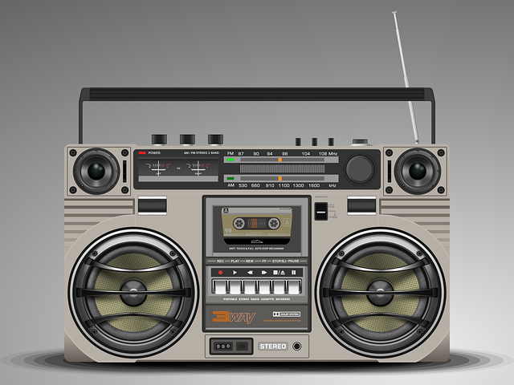

MODERN METHOD OF TRANSMITTING INFORMATION
Modern methods of transmitting information can be defined as advanced techniques
used to share news, ideas, data, and messages through electronic and digital means.
These methods enable fast, efficient communication across distances and include platforms like television, radio, internet, and mobile devices,
allowing instant or widespread information exchange worldwide.
modern methods of transmitting information include:
-
Television: Television delivers video and sound to share news, entertainment, and educational content with a large audience.
Examples: Channels like CNN, BBC, and NTA.

-
Radio: Radio sends audio information, including news and music, to people over a wide area using radio waves.
Examples: Stations like Cool FM, Wazobia FM, and BBC World Service.
-
Newspapers and Magazines: These are printed materials that provide information on current events, articles, and advertisements for readers.
Examples: Publications like The Guardian, Punch, and Time Magazine.
-
Mobile Phones: Mobile phones allow instant communication through calls, text messages, and internet access.
Examples: Brands like Samsung, Apple iPhone, and Tecno.
-
Internet: The internet is a global network that connects people and provides access to information, communication tools, and services.
Examples: Websites like Google, Wikipedia, and Amazon.
-
Social Media: Social media allows people to connect and share information quickly with others around the world.
Examples: Platforms like Facebook, Twitter, and Instagram.
-
Email: Email is a way to send written messages and attachments digitally to recipients instantly.
Examples: Email services like Gmail, Yahoo Mail, and Outlook.
-
Satellite Communication: Satellites in space transmit signals that allow communication and access to services over long distances.
Examples: GPS systems, satellite TV (like DSTV), and satellite internet services.
ADVANTAGES OF MODERN METHOD OF TRANSMITTING INFORMATION
-
Information can be shared almost instantly, regardless of distance.
-
Messages can reach a global audience, breaking geographical barriers.
-
Communication can happen at any time, making it accessible and flexible.
-
Many platforms allow for real-time feedback, such as comments and discussions.
-
Digital methods allow information to be stored and accessed easily over time.
-
Sending information digitally is often cheaper than traditional methods, especially over long distances.
-
Information can be shared in various forms—text, images, audio, and video—enhancing engagement.
-
People with different needs can access information through devices and assistive technologies.
DISADVANTAGES OF MODERN METHOD OF TRANSMITTING INFORMATION
-
People get too much information every day, making it hard to know what is important.
-
Personal information shared online can be stolen or misused by hackers.
-
False information spreads quickly, causing confusion and misunderstandings.
-
Online tools can be attacked by hackers, leading to identity theft or financial loss.
-
We rely too much on phones and the internet, which causes problems when they stop working.
-
Using digital tools too much means we talk less in person, which can affect relationships.
-
Not everyone has access to technology or the internet, which leaves some people out of important information.
-
Using too many electronic devices creates a lot of waste, which harms the environment.